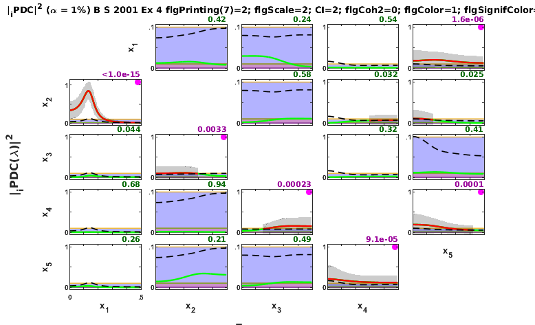

BACCALA & SAMESHIMA (2001A) EXAMPLE 5
DESCRIPTION:
Five-dimensional linear VAR[2] Model Example 4
*x1==>x2 x2-->x3 x3-->x4 x4-->x5 x5-->x4 x5-->x1*
Example borrowed from: Baccala & Sameshima. Partial directed coherence: a new concept in neural structure determination. Biol. Cybern. 84:463--474, 2001.
<http://dx.doi.org/10.1007/PL00007990>
Example Five-dimension VAR[2] with loop and feedback
Contents
clear; clc
Data sample generation
nDiscard = 10000; % number of points discarded at beginning of simulation nPoints = 100; % number of analyzed samples points u = fbaccala2001a_ex5( nPoints, nDiscard ); chLabels = {'x_1';'x_2';'x_3';'x_4';'x_5'}; fs = 1; flgPlot_PDC = 1; flgPlot_pValues = 1;
======================================================================
Pentavariate linear VAR[2] Model Example 5 - closed-loop
Baccala & Sameshima. Biol. Cybern. 84:463-474, 2001.
x1==>x2 x2-->x3 x3-->x4 x4-->x5 x5-->x4 x5-->x1
======================================================================
Data pre-processing: detrending and normalization options
flgDetrend = 1; % Detrending the data set flgStandardize = 0; % No standardization [nChannels,nSegLength] =size(u); if nChannels > nSegLength u = u.'; [nChannels,nSegLength]=size(u); end if flgDetrend for i=1:nChannels, u(i,:)=detrend(u(i,:)); end disp('Time series were detrended.'); end if flgStandardize for i=1:nChannels, u(i,:)=u(i,:)/std(u(i,:)); end disp('Time series were scale-standardized.'); end
Time series were detrended.
MVAR model estimation
maxIP = 30; % maximum model order to consider. alg = 1; % 1: Nutall-Strand MVAR estimation algorithm; % % 2: minimum least squares methods; % % 3: Vieira Morf algorithm; % % 4: QR ARfit algorith. criterion = 1; % Criterion for order choice: % % 1: AIC, Akaike Information Criteria; % % 2: Hanna-Quinn; % % 3: Schwartz; % % 4: FPE; % % 5: fixed order given by maxIP value. disp('Running MVAR estimation routine...') [IP,pf,A,pb,B,ef,eb,vaic,Vaicv] = mvar(u,maxIP,alg,criterion); pause(3); disp(['Number of channels = ' int2str(nChannels) ' with ' ... int2str(nSegLength) ' data points; MAR model order = ' int2str(IP) '.']);
Running MVAR estimation routine... maxOrder limited to 30 IP=1 vaic=2454.483831 IP=2 vaic=2342.154832 IP=3 vaic=2356.100344 Number of channels = 5 with 100 data points; MAR model order = 2.
Testing for adequacy of MAR model fitting through Portmanteau test
h = 20; % testing lag MVARadequacy_signif = 0.05; % VAR model estimation adequacy significance % level aValueMVAR = 1 - MVARadequacy_signif; % Confidence value for the testing flgPrintResults = 1; [Pass,Portmanteau,st,ths] = mvarresidue(ef,nSegLength,IP,aValueMVAR,h,... flgPrintResults);
----------------------------------------------------------------------
MVAR Residues test for whiteness
======================================================================
Good MAR model fitting! Residues white noise hypothesis NOT rejected.
Pass = 0.036
st = 468.697
Granger causality test (GCT) and instantaneous GCT
gct_signif = 0.01; % Granger causality test significance level igct_signif = 0.01; % Instantaneous GCT significance level flgPrintResults = 1; % Flag to control printing gct_alg.m results on command window. [Tr_gct, pValue_gct, Tr_igct, pValue_igct] = gct_alg(u,A,pf,gct_signif, ... igct_signif,flgPrintResults);
----------------------------------------------------------------------
GRANGER CAUSALITY TEST
======================================================================
Connectivity matrix:
Tr_gct =
-1 0 0 0 1
1 -1 0 0 0
0 1 -1 0 0
0 0 1 -1 1
0 0 0 1 -1
Granger causality test p-values:
pValue_gct =
-1.0000 0.4163 0.2372 0.5371 0.0000
0 -1.0000 0.5788 0.0317 0.0252
0.0437 0.0033 -1.0000 0.3247 0.4111
0.6812 0.9354 0.0002 -1.0000 0.0001
0.2585 0.2095 0.4850 0.0001 -1.0000
----------------------------------------------------------------------
INSTANTANEOUS GRANGER CAUSALITY TEST
======================================================================
Instantaneous connectivity matrix:
Tr_igct =
-1 0 0 0 0
0 -1 0 0 0
0 0 -1 0 0
0 0 0 -1 0
0 0 0 0 -1
Instantaneous Granger causality test p-values:
pValue_igct =
-1.0000 0.7907 0.8492 0.1393 0.5401
0.7907 -1.0000 0.3879 0.7950 0.5208
0.8492 0.3879 -1.0000 0.9400 0.9702
0.1393 0.7950 0.9400 -1.0000 0.4554
0.5401 0.5208 0.9702 0.4554 -1.0000
>>>> Instantaneous Granger causality NOT detected.
Original PDC estimation
PDC analysis results are saved in c structure. See asymp_dtf.m or issue
>> help asymp_pdc
command for more detail.
nFreqs = 128; metric = 'info'; % euc = original PDC or DTF; % diag = generalized PDC (gPDC) or DC; % info = information PDC (iPDC) or iDTF. alpha = 0.01; % c = asymp_pdc_f_x(u,A,pf,nFreqs,metric,alpha); % Estimate PDC and asymptotic statistics c = asymp_pdc(u,A,pf,nFreqs,metric,alpha); % Estimate PDC and asymptotic statistics c.Tragct = Tr_gct; c.pvaluesgct = pValue_gct;
PDCn Matrix Layout Plotting
% 1 2 3 4 5 6 7 flgPrinting = [0 1 1 2 3 0 0]; % overriding default setting % blue-line | | | | | | 7--Spectra (0: w/o; 1: Linear; 2: Log; 3: PDC2; % | | | | | | 4: Linear normalized; 5: Log spectra + PDC2) % gray | | | | | 6--Coh2 (0: w/o Coh2; 1: w Coh2) % dark-purple | | | | 5--Mark GCT significant pairs and p-values printing % dashed-blue | | | 4--Plot confidence interval % red | | 3--Significant PDC2|DTF2 in red lines % dashed-black | 2--Patnaik threshold level in black dashed-lines % green 1-- PDC2/DTF2 in green lines or black w/o statistics, % See flgSignifColor bellow for line color selection. flgColor = [0 1 2]; flgScale = 2; w_max=fs/2; for kPDCDTF = [1] for kpower = [2] %2:5 for kScale = [2] %:4 for kCI = [2]; %[3:5] %0:3 for kflgColor = [1] %flgColor for kSignifColor = [3] for kflgCoh2 = [0] if ~(kflgCoh2 == 0 && kpower == 0) id = ['B S 2001 Ex 4 flgPrinting(7)=' ... int2str(kpower) ... '; flgScale=' int2str(kScale) ... '; CI=' int2str(kCI) ... '; flgCoh2=' int2str(kflgCoh2) ... '; flgColor=' int2str(kflgColor) ... '; flgSignifColor=' int2str(kSignifColor)]; flgPrinting(6) = kflgCoh2; flgPrinting(7) = 0; %kpower; flgPrinting(1) = kPDCDTF; flgPrinting(4) = kCI; if flgPlot_PDC, [hxlabel hylabel] = xplot(id,c,flgPrinting,fs,w_max, ... chLabels,kflgColor,kScale, 'tci', kSignifColor); xplot_title(alpha,metric,id); shg; pause(5) snapnow end if flgPlot_pValues [hxlabel hylabel] = xplot_pvalues(id, c, ... flgPrinting,fs,w_max,chLabels,kflgColor,[2]); xplot_title(alpha,metric,'p-value'); shg; pause(5) snapnow end end end end end % close all end end end end